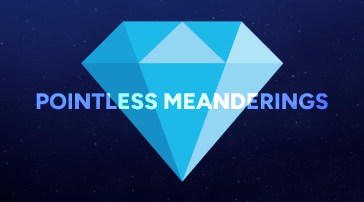

in: Doctors
The Fractal Doctor

| Age | 503 |
| Place of origin | Gallifrey |
| Species | Time Lord |
| Gender | Male |
| Companions | • Ruby Green
• Evie Taylor |
Cause of Regeneration | Blowing up a church with the Rocket Launcher of Rassilon |
| First Appearance | Aliens Inc. |
| Volume 1 | Kaleidoscope of Monsters |
| Volume 2 | Pop Goes the Cosmos |
| Volume 3 | An Awful Lot of Running |
| Episodes | 20 |
| Written By | Brett Morrison |
| Previous | — |
| Next | Beige Doctor |
"The universe is a mess. There’s bits everywhere!"
― The Fractal Doctor
Character
The Fractal Doctor is an incarnation of the Doctor somewhere in the future of the main timeline. Despite his adventuring ways, this incarnation seems less enthused than others - or at least very laid back. The only topic that really engages this Doctor is his love of his tiny hat, as he builds his personality around it and constantly asks others for their opinion of his style.
He once claimed his catchphrase was "fine", but uses the word the same amount anyone else would. (The Monster Mash)
Outfit
The Tiny Hat Doctor wears a tiny glittery blue hat. The rest of his outfit appears dull and unremarkable in relation. During his Halloween-themed adventure, he wore a tiny witch hat.
After his original hat was enlarged to regular size by the Big Hat Master, the Doctor was gifted a new tiny black hat by his late wife Rivers Ong.
Adventures
Early Life
The Doctor wakes up to find the TARDIS shrinking and closing in on him. Dazed and confused, he must find the correct switch in order to reset the dimensional stabiliser, or be crushed to death. (Smaller on the Inside)
The Doctor receives a distress signal from the planet Skaro. Upon arrival, the Daleks tell him they sent no such signal, as their planet is peaceful and thriving. The Daleks are nice now. They are all going about their day, being pleasant and lovely to each other, talking of community and universal peace.
The Doctor locates Davros, and Davros reveals he was the one who sent the distress signal. Something has gone wrong with the genetic coding within Dalek DNA, and they have all become peace-loving people. Davros wants the Doctor’s help to restore the Daleks back to their evil selves to retain his reputation of the most feared leader in the universe and make the Daleks the dominant species across creation.
The Doctor refuses, telling Davros that the Daleks being a force for good will help heal the universe and allow millions of beings to live in peace. The Doctor leaves. Davros gets really mad and decides the only option is to blow up Skaro and destroy the nice Daleks. (Generosity of the Daleks)
The Doctor sets course for the leisure planet, Equilibrium, for a holiday. On the way, the TARDIS is held up by space traffic caused by the Meddling Space Warden. Chaos ensues.(The Space Jam)
[to be added]List of Appearances
| Doctors | Original • Fractal • Beige • Diamond • Neon |